Supplied unofficial study solution, not an official GTU answer key. Answers and teaching diagrams have not been independently verified. Use Enlarge image for small details.આ આપેલો બિનસત્તાવાર અભ્યાસ ઉકેલ છે, સત્તાવાર GTU જવાબવહી નથી. જવાબો અને આકૃતિઓની સ્વતંત્ર ચકાસણી થઈ નથી. વાંચવા માટે ચિત્ર મોટું કરો.
DC Circuit
ડી.સી. સર્કિટ
Q1 · Work, temperature coefficient and resistance
પ્ર.1 · કાર્ય, તાપમાન ગુણાંક અને અવરોધ
Q.1 (a) Define Work, Power and energy.3 marksકાર્ય, શક્તિ અને ઊર્જાની વ્યાખ્યા આપો.Q.1 (a) Define Work, Power and energy.3 marks
Work / electrical energy: Work is energy transferred when charge moves through a potential difference. For constant DC voltage and current, W = VQ = VIt. Its SI unit is the joule (J).
Power: The rate of transferring or converting energy, P = dW/dt. In a DC circuit, P = VI = I²R = V²/R; its unit is the watt (W), where 1 W = 1 J/s.
Energy: The capacity to do work; electrical energy supplied/absorbed over time is W = ∫p dt, or VIt when V and I are constant. Electrical energy is commonly measured in joules or kilowatt-hours.
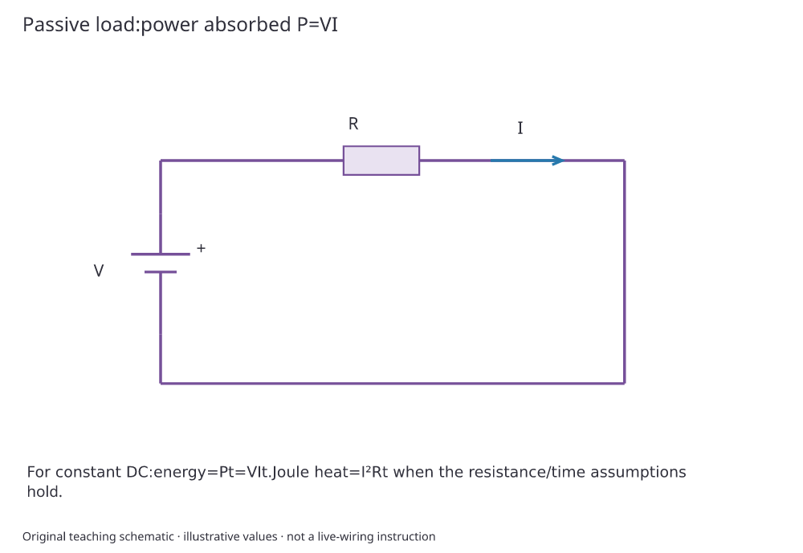
કાર્ય / વિદ્યુત ઊર્જા: વિદ્યુતભાર વિભવાંતરમાંથી પસાર થાય ત્યારે ઊર્જાનું સ્થાનાંતરણ થાય તેને કાર્ય કહેવાય. અચળ DC વોલ્ટેજ અને પ્રવાહ માટે W = VQ = VIt. SI એકમ જુલ (J) છે.
શક્તિ: કાર્ય અથવા ઊર્જા-રૂપાંતરણનો દર. P = dW/dt; DC પરિપથમાં P = VI = I²R = V²/R. એકમ વૉટ (W), જ્યાં 1 W = 1 J/s.
ઊર્જા: કાર્ય કરવાની ક્ષમતા. સમય દરમિયાન અપાતી અથવા શોષાતી વિદ્યુત ઊર્જા W = ∫p dt; V અને I અચળ હોય તો W = VIt. ઊર્જા જુલ અથવા કિલોવૉટ-કલાકમાં માપાય છે.
Q.1 (b) Derive the equation R2=R1[1+ α0 (t2-t1)]4 marksR₂=R₁[1+ α₀ (t₂−t₁)] સમીકરણ તારવો.Q.1 (b) Derive the equation R2=R1[1+ α0 (t2-t1)]4 marks
For a limited temperature range, assume a linear resistance-temperature relation. If α₀ is the temperature coefficient referenced to the initial temperature t₁, then the change from t₁ to t₂ is
ΔR = R₂ − R₁ = α₀ R₁ (t₂ − t₁).
Therefore, R₂ = R₁ + α₀R₁(t₂ − t₁) = R₁[1 + α₀(t₂ − t₁)], as required. Here α₀ has units °C⁻¹ (or K⁻¹), and the model is approximate over the stated range.
Coefficient convention: If a text defines α₀ strictly at 0°C, its exact linear model is R(t)=R(0)[1+α₀t]; eliminating R(0) gives R₂=R₁[1+α₀t₂]/[1+α₀t₁]. The printed expression uses the coefficient relative to R₁ (the usual interval/linearized form).
મર્યાદિત તાપમાન વિસ્તારમાં અવરોધ અને તાપમાનનો સંબંધ રેખીય માનીએ. જો α₀ પ્રારંભિક તાપમાન t₁ની સાપેક્ષ તાપમાન-ગુણાંક હોય, તો t₁થી t₂ સુધીનો ફેરફાર
ΔR = R₂ − R₁ = α₀ R₁ (t₂ − t₁).
અેથી R₂ = R₁ + α₀R₁(t₂ − t₁) = R₁[1 + α₀(t₂ − t₁)], જે માંગેલું સમીકરણ છે. α₀નો એકમ °C⁻¹ (અથવા K⁻¹) છે. આપેલી તાપમાન-સીમા માટે આ અંદાજિત રેખીય મોડેલ છે.
ગુણાંકની નોંધ: જો પુસ્તકમાં α₀નો અર્થ ચોક્કસપણે 0°C પરનો ગુણાંક હોય, તો તેનું ચોક્કસ રેખીય મોડેલ R(t)=R(0)[1+α₀t] છે; R(0) દૂર કરતાં R₂=R₁[1+α₀t₂]/[1+α₀t₁] મળે છે. પ્રશ્નમાં આપેલું સૂત્ર R₁ની સાપેક્ષ ગુણાંકવાળું (સામાન્ય interval/linearized) સ્વરૂપ છે.
Q.1 (c) Explain Ohm’s law and state its limitations and applications.7 marksઓહ્મનો નિયમ સમજાવો અને તેની મર્યાદાઓ તથા ઉપયોગો જણાવો.Q.1 (c) Explain Ohm’s law and state its limitations and applications.7 marks
Law: For a conductor whose physical conditions (especially temperature) remain unchanged, current is directly proportional to the potential difference across it: V ∝ I, hence V = IR. The constant R = V/I is the resistance in ohms (Ω).
Limitations: It applies to ohmic conductors over the range where resistance remains effectively constant. It is not a complete constant-resistance model for non-linear devices/materials such as a diode, transistor junction, electrolytic cell, arc lamp, or a filament whose temperature changes substantially. A single V/I measurement does not prove linearity.
Applications: Calculate an unknown voltage, current, or resistance (V=IR, I=V/R, R=V/I); determine resistor drops and currents; select series resistors for current limiting; and check circuit quantities before verifying power and component ratings.

નિયમ: વાહકની ભૌતિક સ્થિતિ (ખાસ કરીને તાપમાન) અચળ હોય ત્યારે તેમાંથી વહેતો પ્રવાહ તેના છેડા વચ્ચેના વિભવાંતરના સીધા પ્રમાણમાં હોય છે: V ∝ I, તેથી V = IR. અચળ R = V/I અવરોધને ઓહ્મ (Ω)માં માપે છે.
મર્યાદાઓ: અચળ અવરોધ રહે તેવા વિસ્તારમાં આ નિયમ ઓહ્મિક વાહક માટે લાગુ પડે છે. ડાયોડ, ટ્રાન્ઝિસ્ટર જંક્શન, ઇલેક્ટ્રોલાઇટિક સેલ, આર્ક લેમ્પ અને તાપમાનથી અવરોધ નોંધપાત્ર બદલાતો ફિલામેન્ટ જેવા બિનરેખીય ઘટકો માટે અચળ-R મોડેલ પૂરતું નથી. એક જ V/I માપથી રેખીયતા સાબિત થતી નથી.
ઉપયોગો: અજ્ઞાત વોલ્ટેજ, પ્રવાહ અથવા અવરોધ શોધવા (V=IR, I=V/R, R=V/I); રેઝિસ્ટરનો વોલ્ટેજ-ડ્રોપ અને પ્રવાહ ગણવા; કરંટ-લિમિટિંગ રેઝિસ્ટર પસંદ કરવા; અને શક્તિ તથા ઘટકની રેટિંગ ચકાસતાં પહેલાં પરિપથની રાશિઓની તપાસ કરવા.
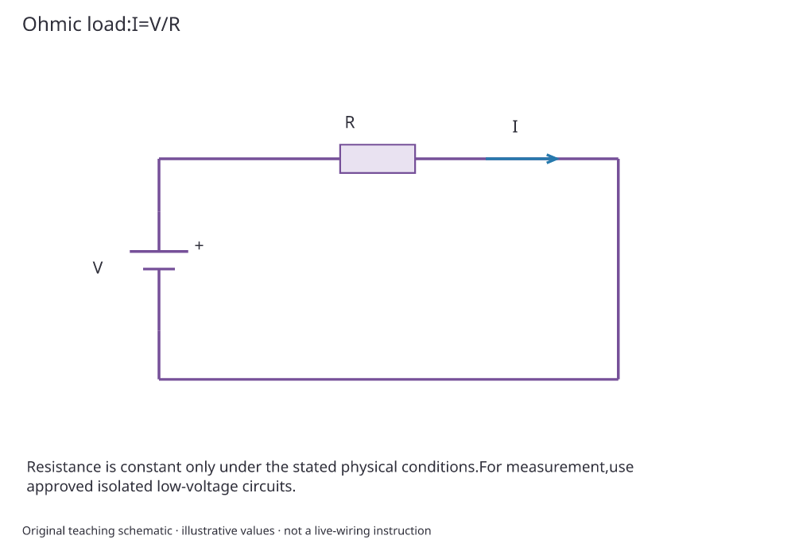
Q.1 (c) OR Define resistance and explain factors affecting the resistance.7 marksઅવરોધની વ્યાખ્યા આપો અને અવરોધને અસર કરતાં પરિબળો સમજાવો.Q.1 (c) OR Define resistance and explain factors affecting the resistance.7 marks
Resistance is the opposition a material/component offers to electric current. For a specified operating point, R = V/I; SI unit: ohm (Ω). For a uniform conductor, R = ρℓ/A.
- Length ℓ: greater length gives greater resistance (
R ∝ ℓ). - Cross-sectional area A: larger area gives lower resistance (
R ∝ 1/A). - Material/resistivity ρ: high-resistivity material gives higher resistance for the same dimensions.
- Temperature: changes resistivity; for many metals R rises with temperature, while semiconductor behaviour can differ.
- Physical condition: composition, strain, defects and contact/joint quality can change the measured resistance.

અવરોધ એટલે પદાર્થ અથવા ઘટક વિદ્યુતપ્રવાહનો કેટલો વિરોધ કરે તે. નિર્દિષ્ટ operating point પર R = V/I; SI એકમ ઓહ્મ (Ω). સમાન વાહક માટે R = ρℓ/A.
- લંબાઈ ℓ: લંબાઈ વધે તો અવરોધ વધે (
R ∝ ℓ). - આડછેદનું ક્ષેત્રફળ A: ક્ષેત્રફળ મોટું હોય તો અવરોધ ઓછો (
R ∝ 1/A). - પદાર્થ/અવરોધકતા ρ: સમાન માપમાં વધુ અવરોધકતા ધરાવતો પદાર્થ વધુ અવરોધ આપે છે.
- તાપમાન: અવરોધકતા બદલે છે; ઘણી ધાતુઓમાં તાપમાન વધે તેમ R વધે છે, જ્યારે સેમિકન્ડક્ટરનું વર્તન અલગ હોઈ શકે છે.
- ભૌતિક સ્થિતિ: રચના, તાણ, ખામીઓ અને સંપર્ક/જોડાણની ગુણવત્તા માપેલા અવરોધને બદલી શકે છે.
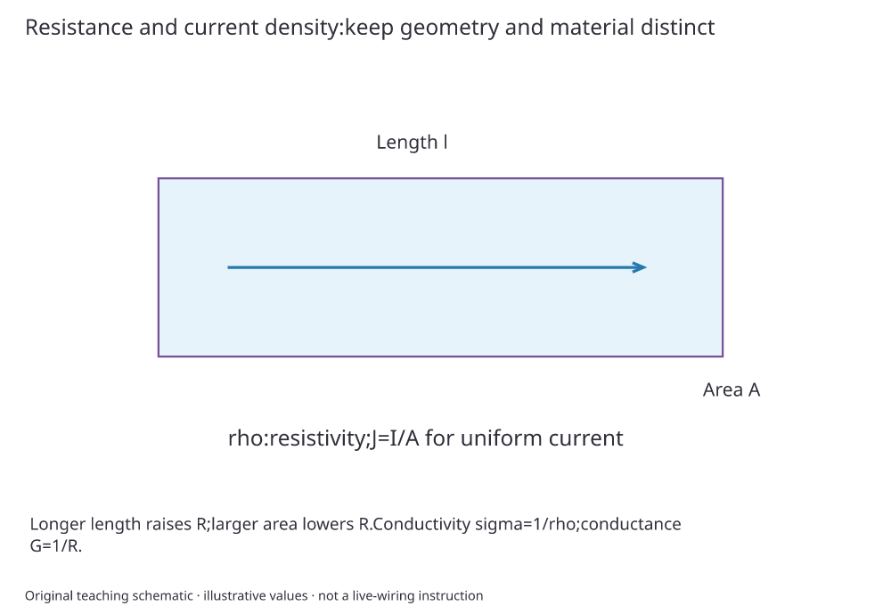
Q2 · Kirchhoff laws and circuit comparison
પ્ર.2 · કિર્ચોફના નિયમો અને પરિપથની સરખામણી
Q.2 (a) State and explain Kirchhoff’s voltage law.3 marksકિર્ચોફનો વોલ્ટેજ નિયમ જણાવો અને સમજાવો.Q.2 (a) State and explain Kirchhoff’s voltage law.3 marks
Kirchhoff’s Voltage Law (KVL): The algebraic sum of all voltage rises and drops around any closed loop is zero: ΣV = 0. Equivalently, total rises equal total drops. It follows from conservation of energy: a unit charge returns to its starting point with no net energy change.
Choose a loop direction and keep one sign convention. For example, around a loop with a 12 V source and 4 Ω and 8 Ω series resistors, +12 − 4I − 8I = 0, giving I = 1 A.
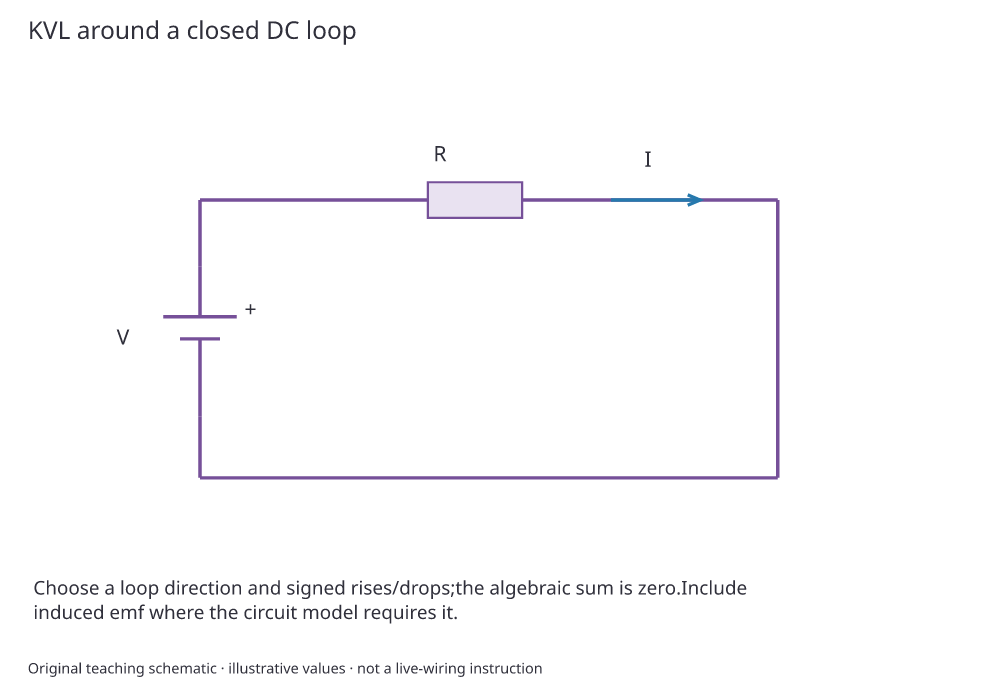
કિર્ચોફનો વોલ્ટેજ નિયમ (KVL): કોઈપણ બંધ લૂપની આસપાસના બધા વોલ્ટેજ rise અને dropનો બીજગણિતીય સરવાળો શૂન્ય છે: ΣV = 0. એટલે કુલ rise, કુલ drop જેટલો. ઊર્જા-સંરક્ષણ મુજબ એકમ ચાર્જ ફરી પ્રારંભિક બિંદુએ આવે ત્યારે તેની કુલ ઊર્જામાં ફેરફાર થતો નથી.
લૂપની દિશા પસંદ કરીને એકસરખી sign convention રાખો. ઉદાહરણ તરીકે 12 V સ્ત્રોત અને શ્રેણીમાં 4 Ω તથા 8 Ω અવરોધ માટે +12 − 4I − 8I = 0, તેથી I = 1 A.

Q.2 (b) Explain Open circuit, Short circuit with diagram.4 marksખુલ્લો પરિપથ અને ટૂંકો પરિપથ આકૃતિ સાથે સમજાવો.Q.2 (b) Explain Open circuit, Short circuit with diagram.4 marks
Open circuit: A broken/disconnected path has ideally infinite resistance. The branch current is zero, although a non-zero voltage may exist across the open terminals.
Short circuit: Two nodes are joined by an ideal zero-resistance path, so the voltage across that path is zero. Current is determined by the rest of the source/network; an ideal voltage source shorted directly would imply unbounded current, so real circuits need protection and current limiting.
The diagram contrasts an open switch (no branch current) and a closed ideal short (zero drop across the link).
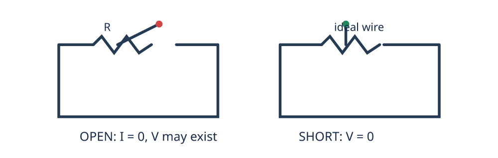
ખુલ્લો પરિપથ: તૂટેલા અથવા છૂટા જોડાણવાળા માર્ગનો આદર્શ અવરોધ અનંત હોય છે. તે શાખામાં પ્રવાહ શૂન્ય રહે છે, પરંતુ ખુલ્લા છેડા વચ્ચે બિનશૂન્ય વોલ્ટેજ હોઈ શકે છે.
ટૂંકો પરિપથ: બે નોડને આદર્શ શૂન્ય-અવરોધના માર્ગથી જોડવામાં આવે છે; તેથી તે જોડાણ ઉપર વોલ્ટેજ શૂન્ય હોય છે. પ્રવાહ બાકીના સ્ત્રોત અને પરિપથથી નક્કી થાય છે. આદર્શ વોલ્ટેજ સ્ત્રોતને સીધો short કરવાથી અમર્યાદિત પ્રવાહની કલ્પના થાય, તેથી વાસ્તવિક પરિપથમાં સુરક્ષા અને current limiting જરૂરી છે.
આ આકૃતિમાં ખુલ્લા switchમાં શાખા-પ્રવાહ નથી; બંધ આદર્શ shortમાં જોડાણનો voltage drop શૂન્ય છે.
Q.2 (c) Compare Electric circuit and Magnetic circuit.7 marksવિદ્યુત પરિપથ અને ચુંબકીય પરિપથની સરખામણી કરો.Q.2 (c) Compare Electric circuit and Magnetic circuit.7 marks
Useful analogies are shown below; they are not identical physical phenomena. Electric current is charge flow, while magnetic flux is a field quantity and is not a flow of material particles.
| Electric circuit | Magnetic circuit |
|---|---|
Driving force: EMF, V (volt) | Driving force: MMF, NI (ampere-turn) |
Flow: current I (ampere) | Field quantity: flux Φ (weber) |
Opposition: resistance R=ρℓ/A (Ω) | Opposition: reluctance ℜ=ℓ/(μA) (A-turn/Wb) |
Ohm relation: I=V/R | Hopkinson relation: Φ=NI/ℜ (linear magnetic path) |
Conductance G=1/R | Permeance Pm=1/ℜ |
Resistance dissipates electrical energy as heat. An ideal reluctance does not consume flux; real magnetic cores can lose energy through hysteresis and eddy currents. Magnetic permeability can also vary with flux density.

નીચે ઉપયોગી સમરૂપતાઓ બતાવી છે; બંને ભૌતિક ઘટનાઓ એકસરખી નથી. વિદ્યુત પ્રવાહ ચાર્જનો પ્રવાહ છે, જ્યારે ચુંબકીય ફ્લક્સ ક્ષેત્ર-રાશિ છે—તે દ્રવ્યકણોનો પ્રવાહ નથી.
| વિદ્યુત પરિપથ | ચુંબકીય પરિપથ |
|---|---|
પ્રેરક બળ: EMF, V (વોલ્ટ) | પ્રેરક બળ: MMF, NI (એમ્પિયર-ટર્ન) |
પ્રવાહ: current I (એમ્પિયર) | ક્ષેત્ર-રાશિ: flux Φ (વેબર) |
વિરોધ: resistance R=ρℓ/A (Ω) | વિરોધ: reluctance ℜ=ℓ/(μA) (A-turn/Wb) |
ઓહ્મનો સંબંધ: I=V/R | હોપકિન્સનનો સંબંધ: Φ=NI/ℜ (રેખીય ચુંબકીય માર્ગ) |
Conductance G=1/R | Permeance Pm=1/ℜ |
અવરોધ વિદ્યુત ઊર્જાને ઉષ્મામાં વિખેરી નાખે છે. આદર્શ reluctance ફ્લક્સનો વપરાશ કરતી નથી; વાસ્તવિક કોરમાં hysteresis અને eddy currentથી ઊર્જા-હાનિ થઈ શકે છે. ચુંબકીય permeability પણ flux density સાથે બદલાઈ શકે છે.

Q.2 (a) OR State and explain Kirchhoff’s current law.3 marksકિર્ચોફનો પ્રવાહ નિયમ જણાવો અને સમજાવો.Q.2 (a) OR State and explain Kirchhoff’s current law.3 marks
Kirchhoff’s Current Law (KCL): At any node, the algebraic sum of currents is zero; equivalently, total current entering equals total current leaving: ΣI = 0. The law follows from conservation of electric charge—charge does not accumulate at an ideal circuit node in steady circuit analysis.
For example, if 5 A and 2 A enter a node and 3 A leaves, the remaining outgoing current is 5 + 2 − 3 = 4 A.

કિર્ચોફનો પ્રવાહ નિયમ (KCL): કોઈપણ નોડ પર પ્રવાહોનો બીજગણિતીય સરવાળો શૂન્ય છે; એટલે અંદર આવતા કુલ પ્રવાહ અને બહાર જતા કુલ પ્રવાહ સમાન છે: ΣI = 0. આ નિયમ વિદ્યુતચાર્જના સંરક્ષણ પરથી મળે છે—સ્થિર પરિપથ-વિશ્લેષણમાં આદર્શ નોડ પર ચાર્જનો સંચય થતો નથી.
ઉદાહરણ: 5 A અને 2 A નોડમાં પ્રવેશે અને 3 A બહાર જાય, તો બાકી બહાર જતો પ્રવાહ 5 + 2 − 3 = 4 A છે.
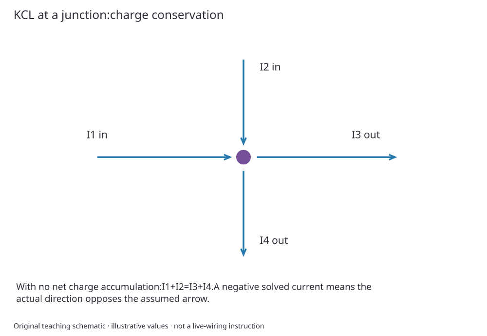
OR · Q.2 (b) State the comparison between series and parallel circuit.4 marksOR · શ્રેણી અને સમાંતર પરિપથની સરખામણી જણાવો.Q.2 (b) State the comparison between series and parallel circuit.4 marks
| Series connection | Parallel connection |
|---|---|
| Components are connected end-to-end in one path. | Each component is connected across the same two nodes. |
| Same current flows through every element. | Same voltage appears across every branch. |
Resistors: Rₑq=R₁+R₂+…; total resistance exceeds each positive resistor. | Resistors: 1/Rₑq=1/R₁+1/R₂+…; equivalent resistance is below the smallest branch resistance. |
| Supply voltage divides among elements. | Total current divides among branches. |
| An open in the path interrupts all current. | An open in one branch need not interrupt other branches. |
These rules assume ideal wires and components; practical source and lead resistances may affect measured values.

| શ્રેણી જોડાણ | સમાંતર જોડાણ |
|---|---|
| ઘટકો એક જ માર્ગમાં છેડેથી છેડે જોડાય છે. | દરેક ઘટક એ જ બે નોડ વચ્ચે જોડાય છે. |
| દરેક ઘટકમાંથી સમાન પ્રવાહ પસાર થાય છે. | દરેક શાખા ઉપર સમાન વોલ્ટેજ રહે છે. |
અવરોધ: Rₑq=R₁+R₂+…; કુલ અવરોધ દરેક ધન અવરોધથી મોટો. | અવરોધ: 1/Rₑq=1/R₁+1/R₂+…; equivalent અવરોધ સૌથી નાના શાખા-અવરોધથી ઓછો. |
| પુરવઠાનું વોલ્ટેજ ઘટકોમાં વહેંચાય છે. | કુલ પ્રવાહ શાખાઓમાં વહેંચાય છે. |
| માર્ગમાં ખુલ્લું જોડાણ થાય તો બધો પ્રવાહ અટકે છે. | એક શાખા ખુલ્લી થાય તો બીજી શાખાઓ ચાલુ રહી શકે છે. |
આ નિયમો આદર્શ તાર અને ઘટકો માને છે; વાસ્તવિક source તથા lead resistance માપેલા મૂલ્યો બદલી શકે છે.
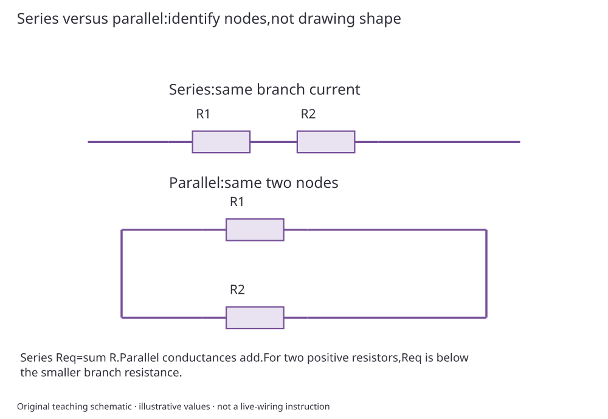
OR · Q.2 (c) State and Explain Faraday’s laws of electromagnetic induction.7 marksOR · ફેરાડેના વિદ્યુતચુંબકીય પ્રેરણના નિયમો જણાવો અને સમજાવો.Q.2 (c) State and Explain Faraday’s laws of electromagnetic induction.7 marks
First law: Whenever the magnetic flux linking a circuit changes, an EMF is induced in it. If the circuit is closed, an induced current flows.
Second law: The magnitude of induced EMF equals the rate of change of flux linkage:
e = −d(NΦ)/dt = −N(dΦ/dt) for a fixed N-turn coil. For a uniform change, |e| = N|ΔΦ|/Δt.
The negative sign expresses Lenz’s law: the induced EMF/current acts in a direction that opposes the change in flux that produces it. Flux linkage can change by changing flux, coil area/orientation, or relative motion between a conductor and magnetic field. Unit of flux: weber; EMF: volt.
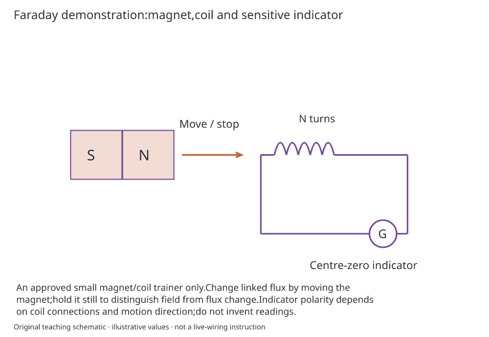
પ્રથમ નિયમ: પરિપથ સાથે સંકળાતો ચુંબકીય ફ્લક્સ બદલાય ત્યારે તેમાં EMF પ્રેરિત થાય છે. પરિપથ બંધ હોય તો પ્રેરિત પ્રવાહ વહે છે.
બીજો નિયમ: પ્રેરિત EMFનું પરિમાણ ફ્લક્સ-લિન્કેજના ફેરફારના દર જેટલું છે:
e = −d(NΦ)/dt = −N(dΦ/dt) (N-વળાંકની સ્થિર coil માટે). સમાન ફેરફાર હોય તો |e| = N|ΔΦ|/Δt.
ઋણ ચિહ્ન લેન્ઝનો નિયમ દર્શાવે છે: પ્રેરિત EMF/પ્રવાહ એવી દિશામાં હોય છે કે તે તેને ઉત્પન્ન કરનાર ફ્લક્સના ફેરફારનો વિરોધ કરે. ફ્લક્સ, coilનું ક્ષેત્રફળ/દિશા અથવા વાહક અને ચુંબકીય ક્ષેત્રની સાપેક્ષ ગતિ બદલીને flux linkage બદલી શકાય છે. ફ્લક્સનો એકમ વેબર અને EMFનો એકમ વોલ્ટ છે.

Q3 · Network theorems and circuit problems
પ્ર.3 · નેટવર્ક પ્રમેયો અને પરિપથના દાખલા
Q.3 (a) Define following term (1) Network (2) loop (3) Branch3 marksનીચેના શબ્દોની વ્યાખ્યા આપો: (1) નેટવર્ક (2) લૂપ (3) શાખા.Q.3 (a) Define following term (1) Network (2) loop (3) Branch3 marks
- Network: An interconnection of electrical elements/sources. A network may be open or closed; a circuit is a network with at least one closed path.
- Loop: Any closed path in a network that starts and ends at the same node without passing through a node more than once (for a simple loop).
- Branch: The part of a network between two nodes containing one or more elements in series; its elements share the branch current when no intervening junction exists.

- નેટવર્ક: વિદ્યુત ઘટકો/સ્ત્રોતોનું પરસ્પર જોડાણ. નેટવર્ક ખુલ્લું અથવા બંધ હોઈ શકે; ઓછામાં ઓછો એક બંધ માર્ગ ધરાવતું નેટવર્ક પરિપથ કહેવાય.
- લૂપ: નેટવર્કમાં એવો બંધ માર્ગ જે એક જ નોડથી શરૂ થઈ એ જ નોડ પર પૂરો થાય અને સરળ લૂપમાં કોઈ નોડમાંથી એકથી વધુ વાર પસાર ન થાય.
- શાખા: બે નોડ વચ્ચેનો નેટવર્કનો ભાગ, જેમાં એક અથવા વધુ શ્રેણીબદ્ધ ઘટકો હોઈ શકે. વચ્ચે junction ન હોય તો તે ઘટકોમાં સમાન branch current વહે છે.
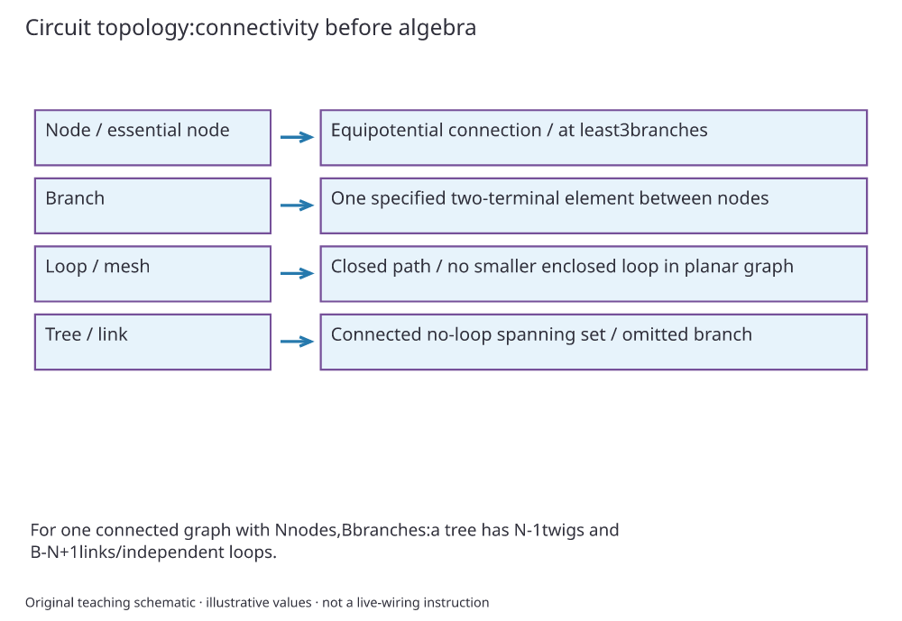
Q.3 (b) Explain “Maximum Power Transfer theorem”.4 marks“મહત્તમ શક્તિ સ્થાનાંતરણ પ્રમેય” સમજાવો.Q.3 (b) Explain “Maximum Power Transfer theorem”.4 marks
Maximum Power Transfer Theorem: A linear two-terminal source network delivers maximum power to a variable resistive load when the load resistance equals the Thevenin resistance seen from the load terminals: RL=Rth.
Replace the network by Vth in series with Rth. Then PL=Vth²RL/(Rth+RL)², which is maximum at RL=Rth. The maximum is Pmax=Vth²/(4Rth). For AC networks, maximum average power requires conjugate matching: ZL=Zth*. At the DC resistive match, ideal source resistance and load each dissipate half the total power, so efficiency is 50%.
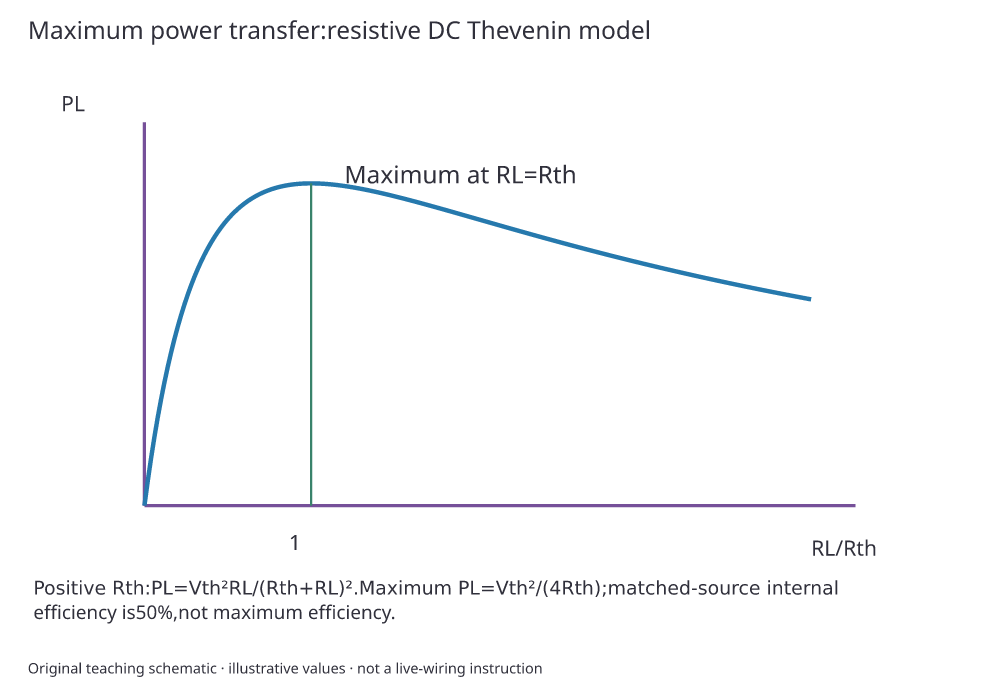
મહત્તમ શક્તિ સ્થાનાંતરણ પ્રમેય: રેખીય બે-ટર્મિનલ source networkમાંથી બદલાય એવા resistive loadને મહત્તમ શક્તિ ત્યારે મળે જ્યારે load resistance, load terminals પરથી જોવામાં આવતાં Thevenin resistance જેટલું હોય: RL=Rth.
નેટવર્કને Rth શ્રેણીમાં જોડાયેલા Vthથી બદલો. ત્યારે PL=Vth²RL/(Rth+RL)²; આ શક્તિ RL=Rth પર મહત્તમ છે. Pmax=Vth²/(4Rth). AC નેટવર્કમાં મહત્તમ સરેરાશ શક્તિ માટે conjugate matching જરૂરી: ZL=Zth*. DC resistive matching વખતે આદર્શ source resistance અને load બન્ને સમાન શક્તિ વાપરે છે; કાર્યક્ષમતા 50% છે.

Q.3 (c) Find Vth, Rth, and load current IL flowing through and load voltage across the load resistance R L in the circuit below (Fig: A) using thevenin’s theorem.7 marksનીચેની Fig. A આકૃતિમાં થેવેનિન પ્રમેયથી Vth, Rth, RLમાંથી વહેતો load current IL અને RL ઉપરનું load voltage શોધો.Q.3 (c) Find Vth, Rth, and load current IL flowing through and load voltage across the load resistance R L in the circuit below (Fig: A) using thevenin’s theorem.7 marks
Remove the 5 kΩ load and find the open-circuit voltage at A–B. With the load open, no current flows through the 8 kΩ arm, so Vth is the divider voltage across 4 kΩ:
Vth = 48 × 4/(12+4) = 12 V.
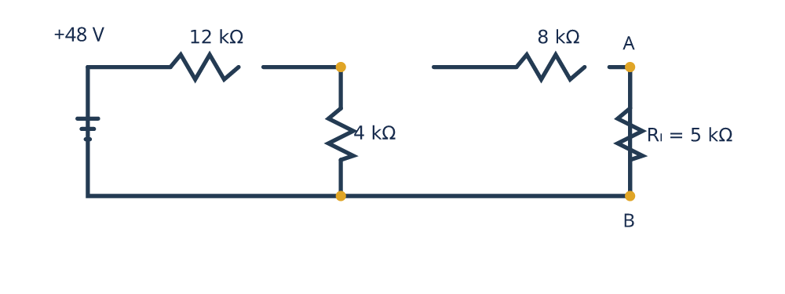
Deactivate the ideal voltage source by replacing it with a short. Looking into A–B gives Rth=8+(12∥4)=8+3=11 kΩ.
Reconnect RL=5 kΩ:
IL=Vth/(Rth+RL)=12/(11+5) kΩ=0.75 mA, from A to B.
VL=ILRL}=0.75 mA×5 kΩ=3.75 V. Check: 3.75 V + 8.25 V across Rth equals 12 V.
5 kΩ load દૂર કરીને A–B વચ્ચેનું open-circuit voltage શોધો. Load ખુલ્લો હોવાથી 8 kΩ શાખામાં પ્રવાહ નથી; તેથી Vth એ 4 kΩ ઉપરનો divider voltage છે:
Vth = 48 × 4/(12+4) = 12 V.

આદર્શ voltage source નિષ્ક્રિય કરતાં તેને shortથી બદલો. A–Bમાંથી જોતા Rth=8+(12∥4)=8+3=11 kΩ.
RL=5 kΩ ફરી જોડીએ:
IL=Vth/(Rth+RL)=12/(11+5) kΩ=0.75 mA, Aથી B દિશામાં.
VL=ILRL=0.75 mA×5 kΩ=3.75 V. ચકાસણી: 3.75 V + Rth પર 8.25 V = 12 V.
Q.3 (a) OR Define following term (1) Active element (2) Passive element (3) Node.3 marksનીચેના શબ્દોની વ્યાખ્યા આપો: (1) Active element (2) Passive element (3) Node.Q.3 (a) OR Define following term (1) Active element (2) Passive element (3) Node.3 marks
- Active element: An element capable of supplying energy to a circuit or providing power gain, e.g. an independent voltage/current source or a properly powered transistor stage.
- Passive element: An element that cannot generate net energy; it absorbs or stores energy, e.g. a resistor, capacitor or inductor (ideal elements).
- Node: A conducting junction or continuous conductor region whose points are at the same potential in an ideal circuit. Two or more branches meet at a node.

- Active element: પરિપથને ઊર્જા આપી શકે અથવા power gain આપી શકે એવો ઘટક; ઉદાહરણ: independent voltage/current source અથવા યોગ્ય bias ધરાવતો transistor stage.
- Passive element: કુલ નવી ઊર્જા ઉત્પન્ન ન કરતો, પરંતુ ઊર્જા શોષતો અથવા સંગ્રહતો ઘટક; ઉદાહરણ: ideal resistor, capacitor અથવા inductor.
- Node: આદર્શ પરિપથમાં સમાન વિભવ ધરાવતો વાહક જંક્શન અથવા સતત વાહક પ્રદેશ. નોડ પર બે કે વધુ branches મળે છે.
OR · Q.3 (b) explain superposition theorem.4 marksOR · સુપરપોઝિશન પ્રમેય સમજાવો.Q.3 (b) explain superposition theorem.4 marks
Superposition theorem: In a linear network with multiple independent sources, the voltage or current in any element equals the algebraic sum of the responses caused by each independent source acting alone.
- Keep one independent source active at a time.
- Replace every other ideal independent voltage source by a short circuit and every ideal independent current source by an open circuit (use its internal resistance if non-ideal).
- Keep dependent sources active; calculate each signed branch voltage/current and add the results.
It applies to voltages and currents in linear circuits, not directly to power. Compute power from the final total voltage/current.
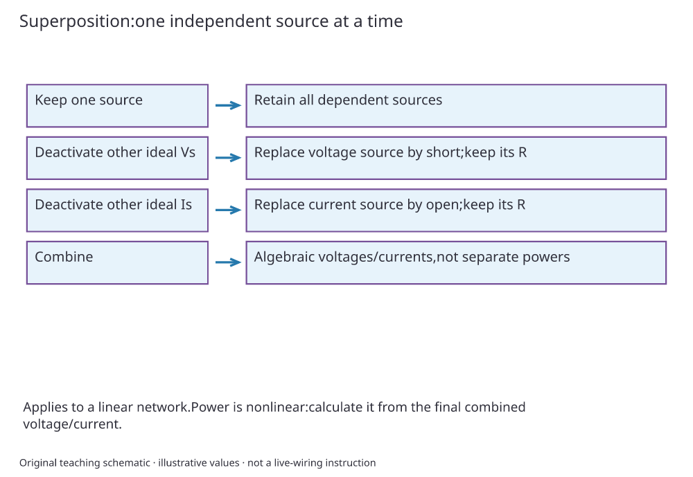
Superposition theorem: અનેક independent sources ધરાવતા રેખીય નેટવર્કમાં કોઈ ઘટકનો voltage અથવા current, દરેક independent source એકલો કાર્ય કરે ત્યારે મળતા પ્રતિસાદોના બીજગણિતીય સરવાળા જેટલો હોય છે.
- એક સમયે એક independent source ચાલુ રાખો.
- બીજા દરેક આદર્શ independent voltage sourceને short circuit અને independent current sourceને open circuitથી બદલો (non-ideal હોય તો તેની internal resistance રાખો).
- Dependent sources ચાલુ જ રાખો; દરેક signed branch voltage/current શોધીને સરવાળો કરો.
આ પ્રમેય રેખીય પરિપથના voltage અને current માટે છે, power માટે સીધો લાગુ પડતો નથી. કુલ voltage/current મળ્યા પછી power ગણો.

OR · Q.3 (c) Find current I L flowing through load resistance R L in the circuit below (Fig: B) using Norton’s theorem.7 marksOR · નીચેની Fig. B આકૃતિમાં નોર્ટન પ્રમેયથી load resistance RLમાંથી વહેતો પ્રવાહ IL શોધો.Q.3 (c) Find current I L flowing through load resistance R L in the circuit below (Fig: B) using Norton’s theorem.7 marks
Remove the RL=5 Ω load. With A–B open, no current flows in the 4 Ω and 6 Ω arms. The 5 Ω, 10 Ω and 5 Ω path is then in series across 30 V: I=30/(5+10+5)=1.5 A. Thus Vth=VAB=1.5×10=15 V.
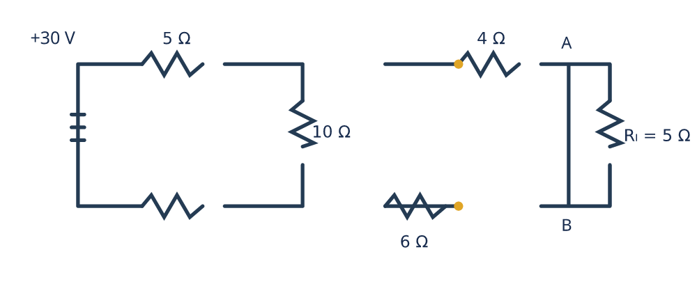
Deactivate the ideal 30 V source (short it): RN=Rth=4+[10∥(5+5)]+6=4+5+6=15 Ω.
IN=Vth/RN=15/15=1 A, directed from A to B. With RL=5 Ω, current division gives
IL=INRN/(RN+RL)=1×15/(15+5)=0.75 A from A to B. The load voltage is VL=ILRL=3.75 V.
RL=5 Ω load દૂર કરો. A–B ખુલ્લું હોય ત્યારે 4 Ω અને 6 Ω શાખામાં પ્રવાહ નથી. 5 Ω, 10 Ω અને 5 Ωનો માર્ગ 30 V ઉપર શ્રેણીમાં છે: I=30/(5+10+5)=1.5 A. તેથી Vth=VAB=1.5×10=15 V.

આદર્શ 30 V source નિષ્ક્રિય કરો (short કરો): RN=Rth=4+[10∥(5+5)]+6=4+5+6=15 Ω.
IN=Vth/RN=15/15=1 A, Aથી B દિશામાં. RL=5 Ω જોડતાં current divisionથી
IL=INRN/(RN+RL)=1×15/(15+5)=0.75 A, Aથી B દિશામાં. Load voltage VL=ILRL=3.75 V.
Q4 · Electrostatics and capacitors
પ્ર.4 · સ્થિત વિદ્યુત અને કેપેસિટર
Q.4 (a) State and Explain Coulomb’s laws of electrostatics.3 marksસ્થિત વિદ્યુતના કુલૉમ્બના નિયમો જણાવો અને સમજાવો.Q.4 (a) State and Explain Coulomb’s laws of electrostatics.3 marks
Coulomb’s law: The electrostatic force between two stationary point charges is along the line joining them, directly proportional to the product of charge magnitudes, and inversely proportional to the square of their separation:
F = (1/(4π ε)) |q₁q₂|/r².
In vacuum, ε=ε₀ and 1/(4π ε₀)≈8.99×10⁹ N·m²/C²; in a uniform dielectric use its permittivity ε. Like charges repel; unlike charges attract. The law assumes point charges (or spherical charge distributions viewed externally) and electrostatic conditions.

કુલૉમ્બનો નિયમ: બે સ્થિર point charges વચ્ચેનું electrostatic બળ તેમને જોડતી સીધી રેખાની દિશામાં હોય છે; તે ચાર્જના પરિમાણોના ગુણાકારના સીધા પ્રમાણમાં અને અંતરના વર્ગના વ્યસ્ત પ્રમાણમાં હોય છે:
F = (1/(4π ε)) |q₁q₂|/r².
શૂન્યાવકાશમાં ε=ε₀ અને 1/(4π ε₀)≈8.99×10⁹ N·m²/C²; સમાન dielectricમાં તેની permittivity ε વાપરો. સમાન ચાર્જો અપાકર્ષે અને વિપરીત ચાર્જો આકર્ષે છે. આ નિયમ point charges (અથવા બહારથી જોતા ગોળાકાર charge distribution) તથા electrostatic સ્થિતિ માટે છે.
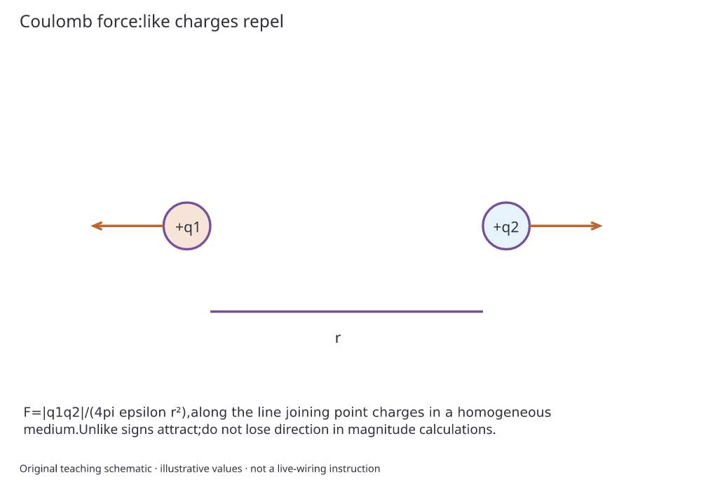
Q.4 (b) Derive the equation for energy stored in a capacitor.4 marksકેપેસિટરમાં સંગ્રહાતી ઊર્જાનું સમીકરણ તારવો.Q.4 (b) Derive the equation for energy stored in a capacitor.4 marks
For a capacitor of capacitance C, at an intermediate charge q the voltage is v=q/C. The small work needed to add charge dq is dW=v dq. Thus, charging from 0 to final charge Q:
W = ∫₀Q (q/C)dq = Q²/(2C).
Since Q=CV, equivalent forms are W=½QV=½CV². This is energy stored in an ideal capacitor; unit: joule (J). The factor ½ appears because voltage rises from zero to V during charging.

C capacitance ધરાવતા capacitorમાં મધ્યવર્તી ચાર્જ q હોય ત્યારે વોલ્ટેજ v=q/C. dq ચાર્જ ઉમેરવા જરૂરી નાનું કાર્ય dW=v dq. તેથી 0થી અંતિમ ચાર્જ Q સુધી ચાર્જ કરતી વખતે:
W = ∫₀Q (q/C)dq = Q²/(2C).
Q=CV હોવાથી સમકક્ષ સ્વરૂપો W=½QV=½CV² છે. આદર્શ capacitorમાં સંગ્રહાતી ઊર્જાનો એકમ જુલ (J) છે. ચાર્જ કરતી વખતે વોલ્ટેજ શૂન્યથી V સુધી વધે છે, તેથી ½ ગુણક આવે છે.
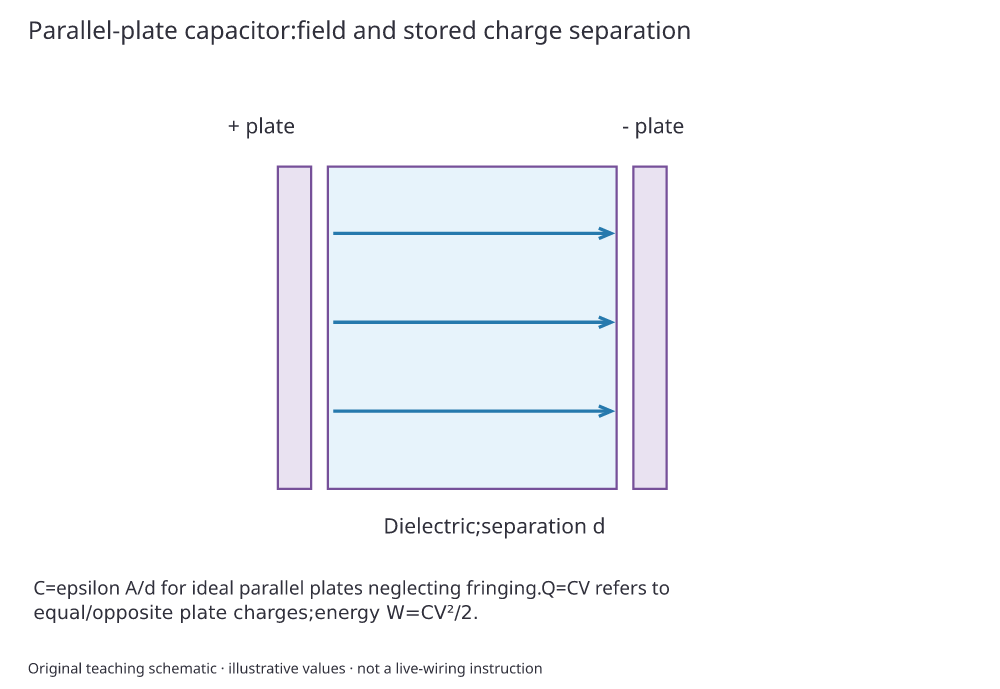
Q.4 (c) Derive the equation for charging of capacitor.7 marksકેપેસિટર ચાર્જ થવાનું સમીકરણ તારવો.Q.4 (c) Derive the equation for charging of capacitor.7 marks
Consider an initially uncharged capacitor C connected to a DC source V through series resistance R. By KVL, V = Ri + vC, with i=C dvC/dt:
RC(dvC/dt)+vC=V.
Separate variables and integrate using vC(0)=0: ∫₀ᵛᶜ dv/(V−v)=∫₀ᵗ dt/(RC), hence
vC(t)=V(1−e−t/RC).
Therefore q(t)=CV(1−e−t/RC), i(t)=(V/R)e−t/RC; the time constant is τ=RC. At t=τ, capacitor voltage is 63.2% of V and current is 36.8% of its initial value. As t→∞, vC→V and i→0. This assumes an ideal source, linear C and zero initial voltage.
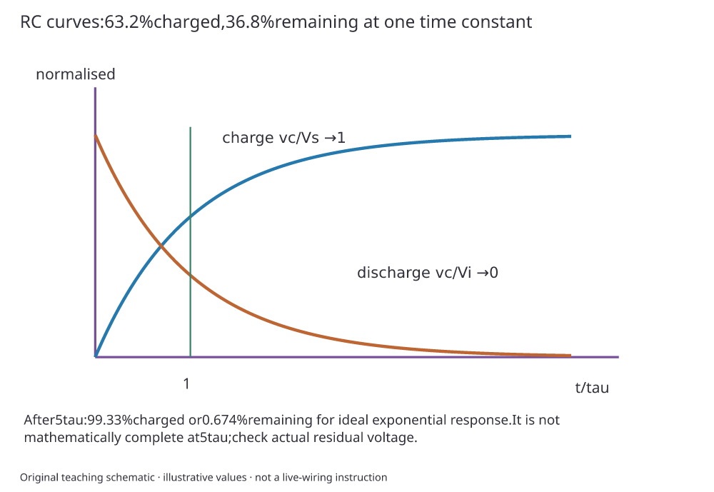
શરૂઆતમાં uncharged capacitor Cને શ્રેણી અવરોધ R મારફતે DC source V સાથે જોડો. KVLથી V = Ri + vC, અને i=C dvC/dt:
RC(dvC/dt)+vC=V.
vC(0)=0 સાથે variables અલગ કરીને સંકલન કરીએ: ∫₀ᵛᶜ dv/(V−v)=∫₀ᵗ dt/(RC), તેથી
vC(t)=V(1−e−t/RC).
અેથી q(t)=CV(1−e−t/RC), i(t)=(V/R)e−t/RC; time constant τ=RC. t=τ સમયે capacitor voltage, Vનું 63.2% અને પ્રવાહ, શરૂઆતના પ્રવાહનું 36.8% હોય છે. t→∞એ vC→V અને i→0. ધારણાઓ: ideal source, રેખીય C અને શરૂઆતનું voltage શૂન્ય.

Q.4 (a) OR State and classify types of capacitors.3 marksકેપેસિટરના પ્રકારો જણાવો અને વર્ગીકૃત કરો.Q.4 (a) OR State and classify types of capacitors.3 marks
A capacitor stores electric charge/energy in an electric field. Common classifications include:
- Fixed capacitors: ceramic, mica, film (polyester/polypropylene), paper, and electrolytic (aluminium or tantalum).
- Variable capacitors: air-variable tuning capacitors and small trimmer capacitors.
- By polarity: polarized (many electrolytics; polarity must be respected) and non-polarized (ceramic, film, mica).
- By dielectric/application: ceramic/film for general or AC use; electrolytic for relatively large capacitance and DC filtering; mica/air for stable or RF circuits, subject to ratings.
Selection must consider capacitance, tolerance, working voltage, frequency, temperature, leakage, polarity and safety class.

Capacitor વિદ્યુત ક્ષેત્રમાં charge/ઊર્જા સંગ્રહે છે. સામાન્ય વર્ગીકરણ:
- સ્થિર capacitor: ceramic, mica, film (polyester/polypropylene), paper અને electrolytic (aluminium અથવા tantalum).
- Variable capacitor: tuning માટે air-variable capacitor અને નાનું trimmer capacitor.
- ધ્રુવતા મુજબ: polarized (ઘણા electrolytic; polarity જાળવવી) અને non-polarized (ceramic, film, mica).
- Dielectric/ઉપયોગ મુજબ: સામાન્ય અથવા AC ઉપયોગમાં ceramic/film; મોટી capacitance અને DC filtering માટે electrolytic; સ્થિરતા અથવા RFમાં rating મુજબ mica/air.
પસંદગી વખતે capacitance, tolerance, working voltage, frequency, temperature, leakage, polarity અને safety class તપાસો.
OR · Q.4 (b) Explain Factor affecting capacitor.4 marksOR · કેપેસિટરને અસર કરતાં પરિબળો સમજાવો.Q.4 (b) Explain Factor affecting capacitor.4 marks
For a parallel-plate capacitor (neglecting edge/fringing fields),
C = εA/d = ε₀εᵣA/d.
- Plate area A: larger overlap area increases capacitance.
- Separation d: greater spacing decreases capacitance.
- Dielectric permittivity ε: a higher-permittivity material increases capacitance; dielectric strength also limits safe voltage.
- Geometry and construction: number/arrangement of plates, edge effects, winding and internal connection affect actual value.
- Operating conditions: temperature, frequency, ageing, voltage coefficient and tolerances can change practical capacitance and losses.

સમાંતર-પ્લેટ capacitor માટે (કિનારી/fringing field અવગણીને),
C = εA/d = ε₀εᵣA/d.
- પ્લેટનું ક્ષેત્રફળ A: overlap area મોટું થાય તો capacitance વધે.
- અંતર d: પ્લેટ વચ્ચેનું અંતર વધે તો capacitance ઘટે.
- Dielectric permittivity ε: ઊંચી permittivity ધરાવતો પદાર્થ capacitance વધારે; dielectric strength સલામત voltage પણ મર્યાદિત કરે છે.
- રચના અને બનાવટ: પ્લેટોની સંખ્યા/ગોઠવણી, edge effect, winding તથા આંતરિક જોડાણ વાસ્તવિક મૂલ્ય બદલે છે.
- કાર્યકારી સ્થિતિ: temperature, frequency, ageing, voltage coefficient અને toleranceથી practical capacitance તથા losses બદલાય છે.
OR · Q.4 (c) Find the equivalent capacitance when Three capacitors of 4, 6 and 8 microfarads respectively are connected in (i) series and , (ii) parallel.7 marksOR · અનુક્રમે 4, 6 અને 8 માઇક્રોફેરાડના ત્રણ કેપેસિટર (i) શ્રેણીમાં અને (ii) સમાંતરમાં જોડાય ત્યારે સમકક્ષ કેપેસિટન્સ શોધો.Q.4 (c) Find the equivalent capacitance when Three capacitors of 4, 6 and 8 microfarads respectively are connected in (i) series and , (ii) parallel.7 marks
Given C₁=4 μF, C₂=6 μF, C₃=8 μF.
(i) Series: 1/Cₛ=1/4+1/6+1/8=(6+4+3)/24=13/24, so Cₛ=24/13=1.846 μF (approximately).
(ii) Parallel: Cₚ=C₁+C₂+C₃=4+6+8=18 μF.
Check: series equivalent is below the smallest capacitor (4 μF), while parallel equivalent is the sum.
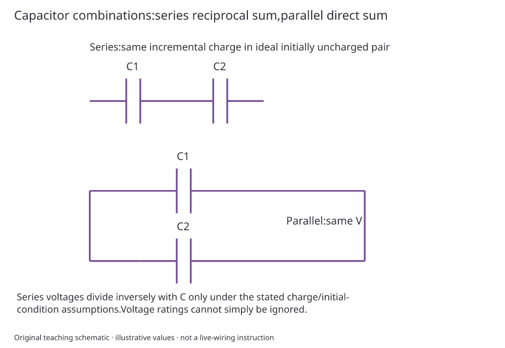
આપેલ: C₁=4 μF, C₂=6 μF, C₃=8 μF.
(i) શ્રેણીમાં: 1/Cₛ=1/4+1/6+1/8=(6+4+3)/24=13/24, તેથી Cₛ=24/13=1.846 μF (લગભગ).
(ii) સમાંતરમાં: Cₚ=C₁+C₂+C₃=4+6+8=18 μF.
ચકાસણી: શ્રેણીનું equivalent મૂલ્ય સૌથી નાની capacitance (4 μF) કરતાં ઓછું છે; સમાંતરમાં મૂલ્યોનો સરવાળો મળે છે.

Q5 · Current division, inductors and magnetic energy
પ્ર.5 · પ્રવાહ વિભાજન, ઇન્ડક્ટર અને ચુંબકીય ઊર્જા
Q.5 (a) Find the formula for the current with the three resistances connected in parallels.3 marksસમાંતરમાં જોડાયેલા ત્રણ અવરોધ માટે પ્રવાહનું સૂત્ર મેળવો.Q.5 (a) Find the formula for the current with the three resistances connected in parallels.3 marks
Let R₁, R₂, R₃ be connected in parallel across voltage V, and let total current be IT. Each branch has the same voltage, so Iₖ=V/Rₖ and IT=V(1/R₁+1/R₂+1/R₃).
Thus current in branch 1 is
I₁=IT(1/R₁)/(1/R₁+1/R₂+1/R₃)=ITR₂R₃/(R₁R₂+R₂R₃+R₃R₁).
Similarly, I₂=ITR₁R₃/(Σ pair-products) and I₃=ITR₁R₂/(Σ pair-products). The smaller branch resistance carries the larger current; I₁+I₂+I₃=IT.

R₁, R₂, R₃ને V voltage ઉપર સમાંતરમાં જોડેલા માનો અને કુલ પ્રવાહ IT લો. દરેક શાખામાં સમાન voltage હોવાથી Iₖ=V/Rₖ અને IT=V(1/R₁+1/R₂+1/R₃).
તેથી પ્રથમ શાખાનો પ્રવાહ
I₁=IT(1/R₁)/(1/R₁+1/R₂+1/R₃)=ITR₂R₃/(R₁R₂+R₂R₃+R₃R₁).
તે જ રીતે I₂=ITR₁R₃/(જોડી-ગુણાકારોનો સરવાળો) અને I₃=ITR₁R₂/(જોડી-ગુણાકારોનો સરવાળો). ઓછા અવરોધવાળી શાખામાં વધુ પ્રવાહ વહે છે; I₁+I₂+I₃=IT.

Q.5 (b) Give the classification of inductor.4 marksઇન્ડક્ટરનું વર્ગીકરણ આપો.Q.5 (b) Give the classification of inductor.4 marks
Inductors can be classified along several independent bases:
- Core material: air-core, iron/laminated-steel core, ferrite core and powdered-iron core.
- Adjustability: fixed-value and adjustable/tunable inductors.
- Construction/use: wire-wound, multilayer/chip, RF/tuned-circuit inductor, power inductor, choke, and coupled inductor/transformer winding.
- Magnetic coupling: uncoupled single inductor or coupled coils with mutual inductance.
Core choice affects inductance, losses, saturation, frequency range and size. A practical inductor is specified by inductance, current rating, winding resistance, core loss and operating frequency.

Inductorનું વર્ગીકરણ અનેક સ્વતંત્ર આધાર પર થાય છે:
- Core material: air-core, iron/laminated-steel core, ferrite core અને powdered-iron core.
- બદલી શકાય તે મુજબ: fixed-value તથા adjustable/tunable inductors.
- રચના/ઉપયોગ: wire-wound, multilayer/chip, RF/tuned-circuit inductor, power inductor, choke અને coupled inductor/transformer winding.
- ચુંબકીય coupling: uncoupled single inductor અથવા mutual inductance ધરાવતી coupled coils.
Coreની પસંદગી inductance, losses, saturation, frequency range અને કદને અસર કરે છે. Practical inductor માટે inductance, current rating, winding resistance, core loss અને operating frequency દર્શાવાય છે.
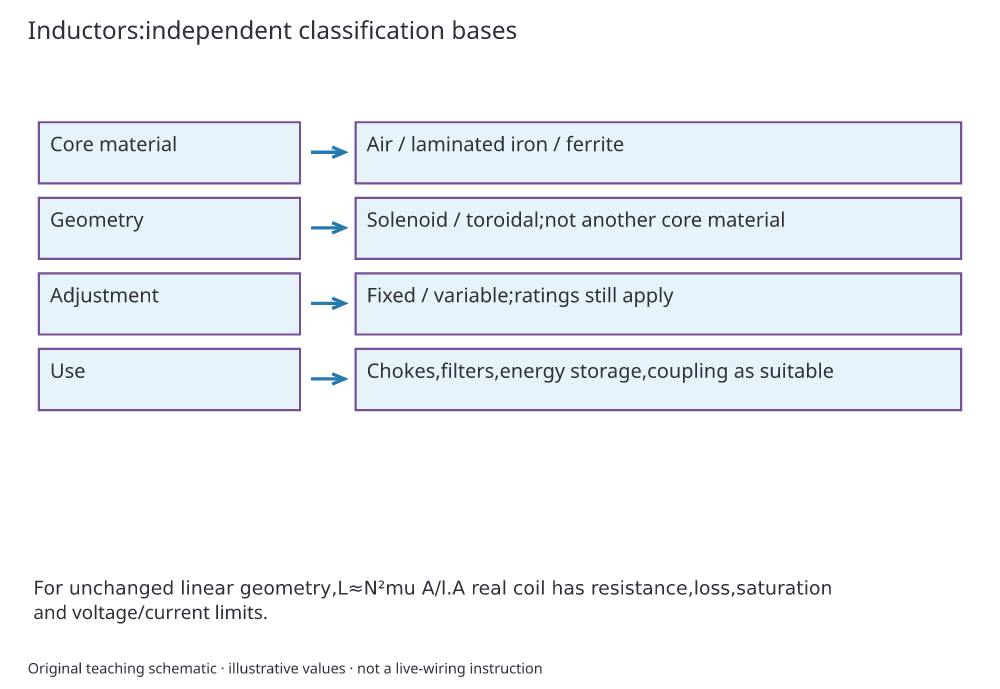
Q.5 (c) Derive equation for energy stored in magnetic field.7 marksચુંબકીય ક્ષેત્રમાં સંગ્રહાતી ઊર્જાનું સમીકરણ તારવો.Q.5 (c) Derive equation for energy stored in magnetic field.7 marks
For a linear inductor of constant inductance L, v=L(di/dt). Instantaneous power supplied is p=vi=Li(di/dt). Since p=dW/dt,
dW=Li di, hence W=∫₀ᴵ Li di = ½LI².
Using λ=LI, the same result is W=½λI. The energy is stored in the magnetic field; unit: joule. The derivation assumes a linear, lossless inductor with constant L. For a nonlinear magnetic element, use W=∫₀ᴵ λ(i)di.
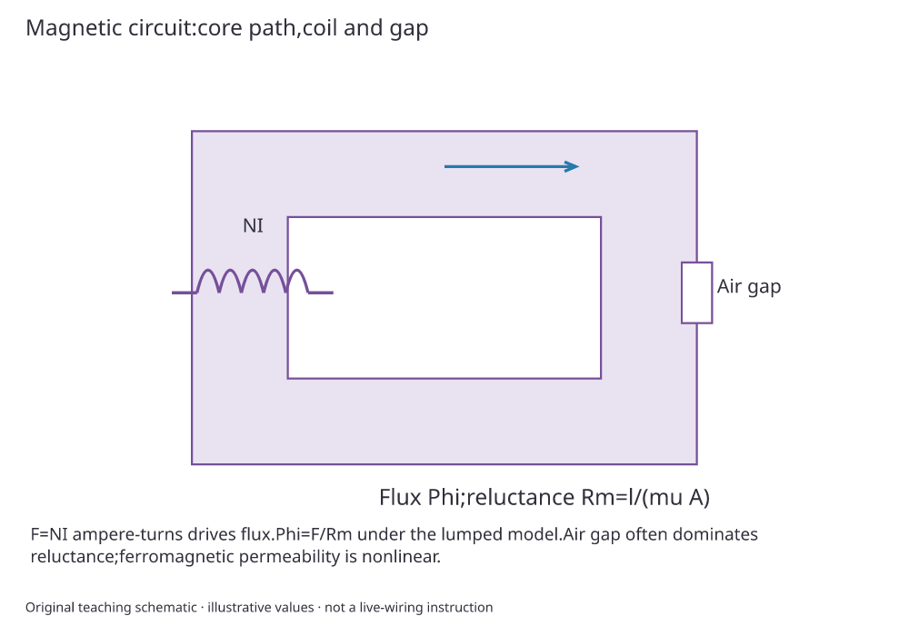
અચળ inductance L ધરાવતા રેખીય inductor માટે v=L(di/dt). તત્ક્ષણિક અપાતી શક્તિ p=vi=Li(di/dt). p=dW/dt હોવાથી,
dW=Li di, તેથી W=∫₀ᴵ Li di = ½LI².
λ=LI વાપરીએ તો સમકક્ષ W=½λI. ઊર્જા ચુંબકીય ક્ષેત્રમાં સંગ્રહાય છે; એકમ જુલ. આ તારણ અચળ L ધરાવતા રેખીય, lossless inductor માટે છે. બિનરેખીય magnetic element માટે W=∫₀ᴵ λ(i)di વાપરો.
Q.5 (a) OR Derive the expression to find the voltage drop across any resistance in network having three resistance connected in series.3 marksશ્રેણીમાં જોડાયેલા ત્રણ અવરોધ ધરાવતા નેટવર્કમાં કોઈપણ અવરોધ ઉપરનો voltage drop શોધવાનું સમીકરણ તારવો.Q.5 (a) OR Derive the expression to find the voltage drop across any resistance in network having three resistance connected in series.3 marks
Let R₁, R₂, R₃ be in series across supply voltage V. The same current flows through all three:
I=V/(R₁+R₂+R₃).
By Ohm’s law, the drop across any selected resistance Rₖ is
Vₖ=IRₖ=V Rₖ/(R₁+R₂+R₃), for k=1,2,3.
This is the voltage-divider relation. The drops add to the supply: V₁+V₂+V₃=V.
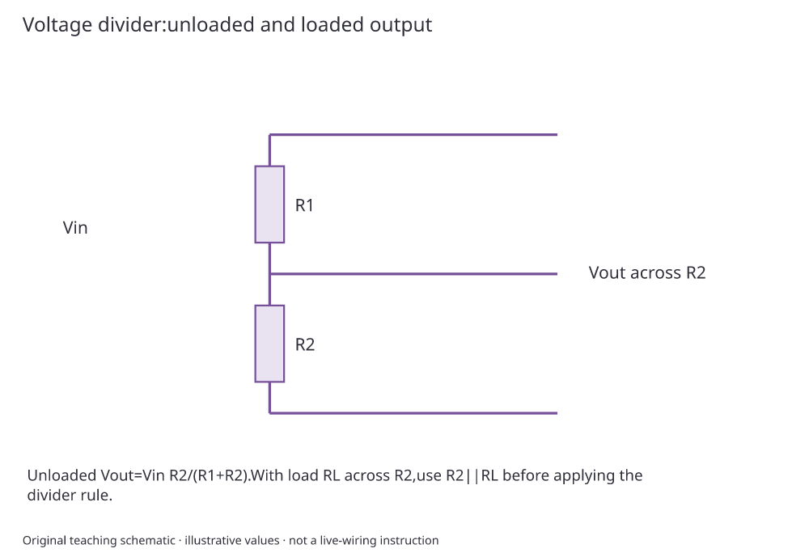
R₁, R₂, R₃ અવરોધોને પુરવઠા voltage V ઉપર શ્રેણીમાં જોડો. ત્રણેયમાંથી સમાન પ્રવાહ વહે છે:
I=V/(R₁+R₂+R₃).
ઓહ્મના નિયમથી પસંદ કરેલા કોઈપણ Rₖ ઉપરનો voltage drop
Vₖ=IRₖ=V Rₖ/(R₁+R₂+R₃), જ્યાં k=1,2,3.
આ voltage-divider સંબંધ છે. બધા dropsનો સરવાળો પુરવઠા જેટલો: V₁+V₂+V₃=V.
OR · Q.5 (b) Define Magneto motive force and Magnetic Flux4 marksOR · Magnetomotive force અને Magnetic fluxની વ્યાખ્યા આપો.Q.5 (b) Define Magneto motive force and Magnetic Flux4 marks
Magnetomotive force (MMF): The magnetic potential that establishes flux in a magnetic circuit. For a coil of N turns carrying current I, Fm=NI; unit: ampere-turn (A-turn). In a simple magnetic circuit, Φ=Fm/ℜ.
Magnetic flux (Φ): A measure of the total magnetic field passing through a surface, Φ=∫B·dA; for uniform perpendicular B, Φ=BA. SI unit: weber (Wb). Flux is a scalar signed quantity with an assigned surface direction; flux density B is measured in tesla (T = Wb/m²).

Magnetomotive force (MMF): ચુંબકીય પરિપથમાં flux સ્થાપિત કરતું magnetic potential. N turns ધરાવતી coilમાં I પ્રવાહ હોય તો Fm=NI; એકમ ampere-turn (A-turn). સરળ magnetic circuitમાં Φ=Fm/ℜ.
Magnetic flux (Φ): કોઈ સપાટીમાંથી પસાર થતા કુલ ચુંબકીય ક્ષેત્રનું માપ, Φ=∫B·dA; uniform અને સપાટીને લંબ B માટે Φ=BA. SI એકમ વેબર (Wb). નિર્ધારિત સપાટી-દિશા મુજબ flux signed scalar રાશિ છે; flux density Bનો એકમ tesla (T = Wb/m²).
OR · Q.5 (c) Derive the equation of equivalent inductance L = L1+L2+2M when two inductors are connected in series addition.7 marksOR · બે ઇન્ડક્ટર series-aiding રીતે જોડાય ત્યારે સમકક્ષ inductance L=L₁+L₂+2Mનું સમીકરણ તારવો.Q.5 (c) Derive the equation of equivalent inductance L = L1+L2+2M when two inductors are connected in series addition.7 marks
For two magnetically coupled inductors in series-aiding connection, the mutual flux aids the self-flux. With the dot convention and series current i, the total flux linkage is
λ = λ₁+λ₂ = (L₁i+Mi)+(L₂i+Mi) = (L₁+L₂+2M)i.
Since λ=Leqi,
Leq=L₁+L₂+2M.
Thus the requested plus sign is for series aiding. For series opposing, Leq=L₁+L₂−2M. Mutual inductance M=k√(L₁L₂), where 0≤k≤1; the connection/dot orientation determines the sign.
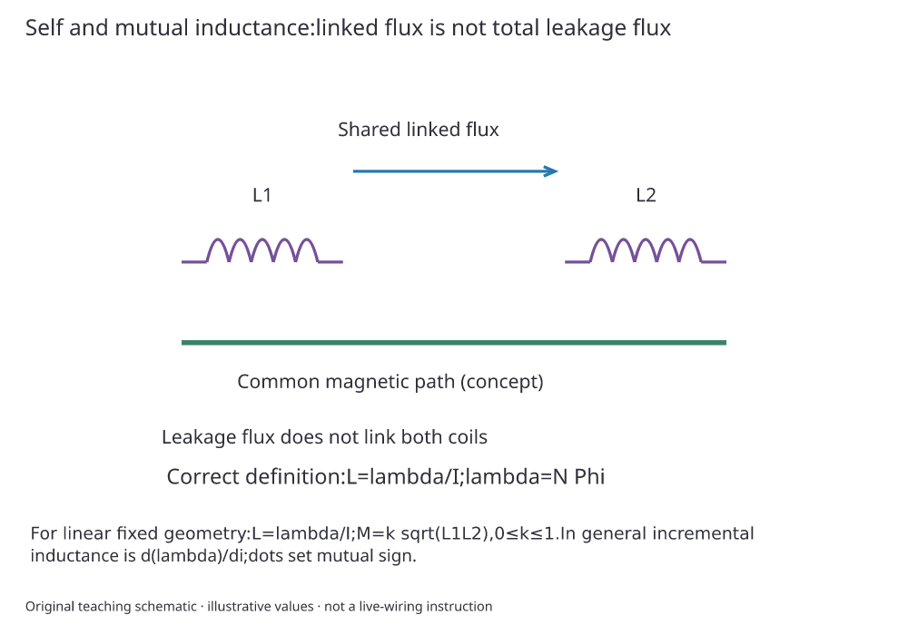
ચુંબકીય રીતે coupled બે inductorsને series-aiding રીતે જોડીએ ત્યારે mutual flux, self-fluxને મદદ કરે છે. Dot convention અને શ્રેણી પ્રવાહ i પ્રમાણે કુલ flux linkage
λ = λ₁+λ₂ = (L₁i+Mi)+(L₂i+Mi) = (L₁+L₂+2M)i.
λ=Leqi હોવાથી,
Leq=L₁+L₂+2M.
અેથી માંગેલું plus ચિહ્ન series-aiding જોડાણ માટે છે. Series-opposing માટે Leq=L₁+L₂−2M. Mutual inductance M=k√(L₁L₂), જ્યાં 0≤k≤1; જોડાણ અને dotની દિશા ચિહ્ન નક્કી કરે છે.